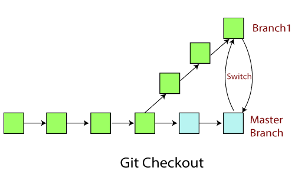

Checkout and Best Practices
A checkout is a change in version of a repository, you checkout a branch and open a new one to edit/view. Checkout can also be used to view old commits and to see a project's older code. Checking out branches is different from files, as working on a branch is not read-only. Checking out is very important to save the current progress you've made on your project. Commit early and commit often, however ensure you are committing working pieces of your project. That way you can go back to a version if a commit does not go as planned, which is another reason why testing prior to committing is imperative.
